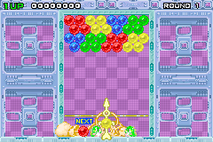

Bust A Move (GBA) Color Patcher

Before
After
Download .zip file from
https://www.gbadev.org/demos.php?showinfo=376
Extract the file
BustAMoveGBA.bin
Select the file here:
Choose desired saturation, contrast and brightness:
Saturation
:
Contrast
:
Brightness
:
Reset
Click the
Patch
button:
Patch